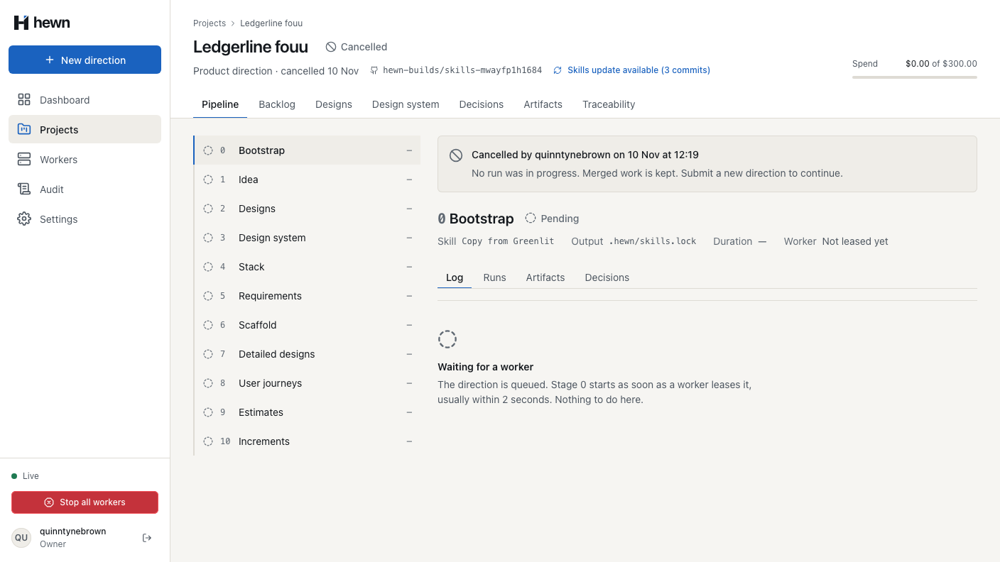
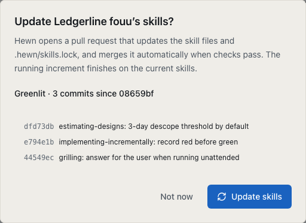
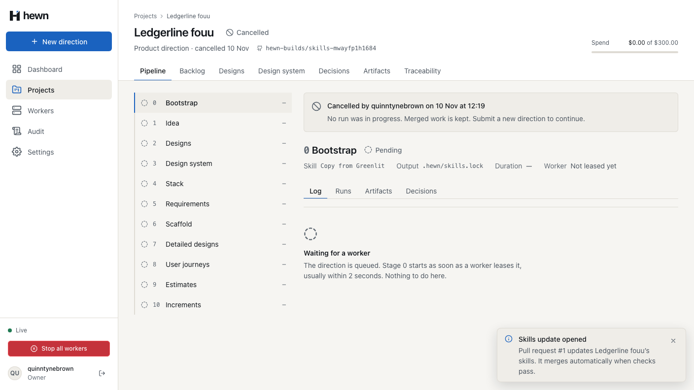
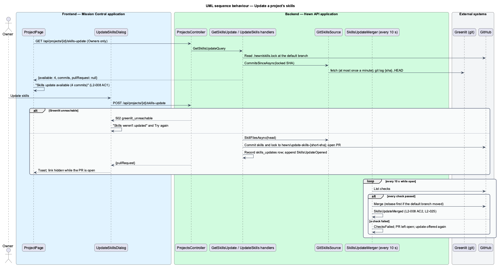
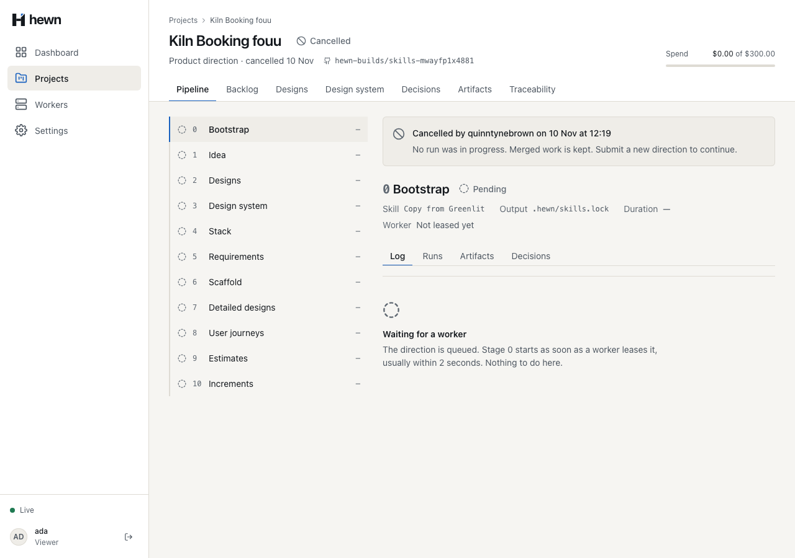
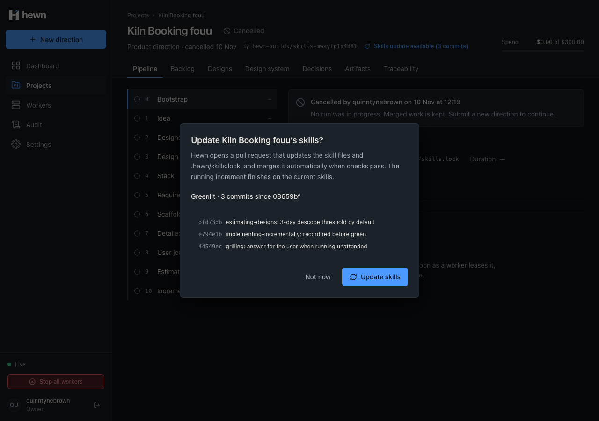
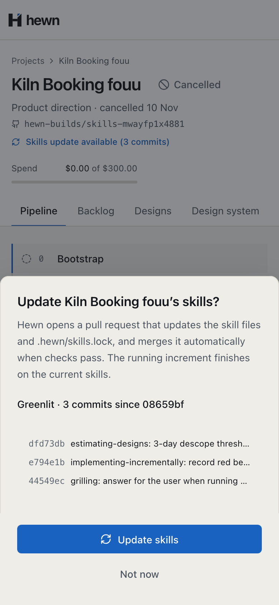

Greenlit moves on; a pull request brings the project with it.



/** L2-008 AC1: the header link, for an Owner only, while Greenlit is ahead and no update waits for its checks. */
export function skillsUpdateLink(update: SkillsUpdate | null, isOwner: boolean): string | null {
if (!update || !isOwner || update.available === 0 || update.pullRequest) return null;
return `Skills update available (${update.available} ${update.available === 1 ? 'commit' : 'commits'})`;
}
var commits = await skills.CommitsSinceAsync(locked.Sha, cancellationToken);
return new SkillsUpdateDto(commits.Count, locked.Sha, head, commits, open);
var files = await SkillsUpdateFiles.BuildAsync(gitHub, skills, owner, name, locked, head, cancellationToken);
var shortSha = head[..7];
var branch = $"hewn/update-skills-{shortSha}";
var title = $"Update skills to greenlit@{shortSha}";
await gitHub.CommitToBranchAsync(owner, name, branch, title, files, rebase: false, cancellationToken);
var pull = await gitHub.OpenPullRequestAsync(owner, name, branch, title, Body(locked.Sha, head, commits), cancellationToken);
var update = new SkillsUpdate(project.Id, locked.Sha, head, branch, pull.Number, pull.Url, user.Login, clock.GetUtcNow());
db.SkillsUpdates.Add(update);
await events.AppendAsync(project.Id, "SkillsUpdateOpened", new { number = pull.Number, url = pull.Url, toSha = head }, cancellationToken);
await db.SaveChangesAsync(cancellationToken);
// A repository with no CI reports no checks; once none has appeared for two minutes there is nothing to wait for.
if (checks.Count == 0 ? clock.GetUtcNow() - update.CreatedAt < NoChecksGrace : checks.Any(c => c.Status != "completed"))
{
return false;
}
var failed = checks.Where(c => c.Conclusion is not ("success" or "skipped" or "neutral")).Select(c => c.Name).ToList();
if (failed.Count > 0)
{
update.ChecksFailed(failed, clock.GetUtcNow());
await events.AppendAsync(project.Id, "SkillsUpdateChecksFailed", new { number = update.PullRequestNumber, checks = failed }, cancellationToken);
await db.SaveChangesAsync(cancellationToken);
catch (GitHubBranchBehindException)
{

var response = await owner.PostAsync($"/api/projects/{projectId}/skills-update", new { });
Assert.Equal(HttpStatusCode.OK, response.StatusCode);
var pullRequest = (await HewnClient.ReadJsonAsync(response)).GetProperty("pullRequest");
var number = pullRequest.GetProperty("number").GetInt32();
Assert.StartsWith("https://github.com/northwind/ledgerline/pull/", pullRequest.GetProperty("url").GetString());
var repository = _factory.GitHub.Repository("northwind", "ledgerline")!;
var pull = repository.PullRequests.Single(p => p.Number == number);
Assert.Equal($"hewn/update-skills-{head[..7]}", pull.Head);
Assert.Equal($"Update skills to greenlit@{head[..7]}", pull.Title);
// A folder the project had before bootstrap stays its own (L2-007 AC3).
Assert.Equal("Ours, kept at bootstrap.", Encoding.UTF8.GetString(branch[".claude/skills/house-style/SKILL.md"]));
var lockFile = System.Text.Json.JsonDocument.Parse(branch[".hewn/skills.lock"]).RootElement;
public async Task A_repository_with_no_checks_merges_once_none_appear_for_two_minutes()
{
var (_, _, number) = await UpdatingAsync(withCi: false);
await _factory.MergeSkillsUpdatesAsync();
Assert.False(Repository.PullRequests.Single(p => p.Number == number).Merged);
_factory.Clock.Advance(TimeSpan.FromSeconds(121));
await _factory.MergeSkillsUpdatesAsync();
Assert.True(Repository.PullRequests.Single(p => p.Number == number).Merged);
}
await project.open(projectId);
await expect(skills.link).toHaveText('Skills update available (2 commits)');
await skills.open();
await expect(skills.since).toHaveText(`Greenlit · 2 commits since ${locked.slice(0, 7)}`);
await expect(skills.commits).toHaveText([
`${head.slice(0, 7)}estimating-designs: 3-day descope threshold by default`,
/grilling: answer for the user when running unattended$/,
]);
await skills.update.click();
await expect(skills.dialog).toBeHidden();
await expect(skills.openedToast).toContainText('It merges automatically when checks pass.');
await expect(skills.link).toHaveCount(0);
// The merger sweeps every 10 seconds; the fake's checks pass at once.
await expect.poll(() => lockedSha(page, repository), { timeout: 45_000 }).toBe(head);


